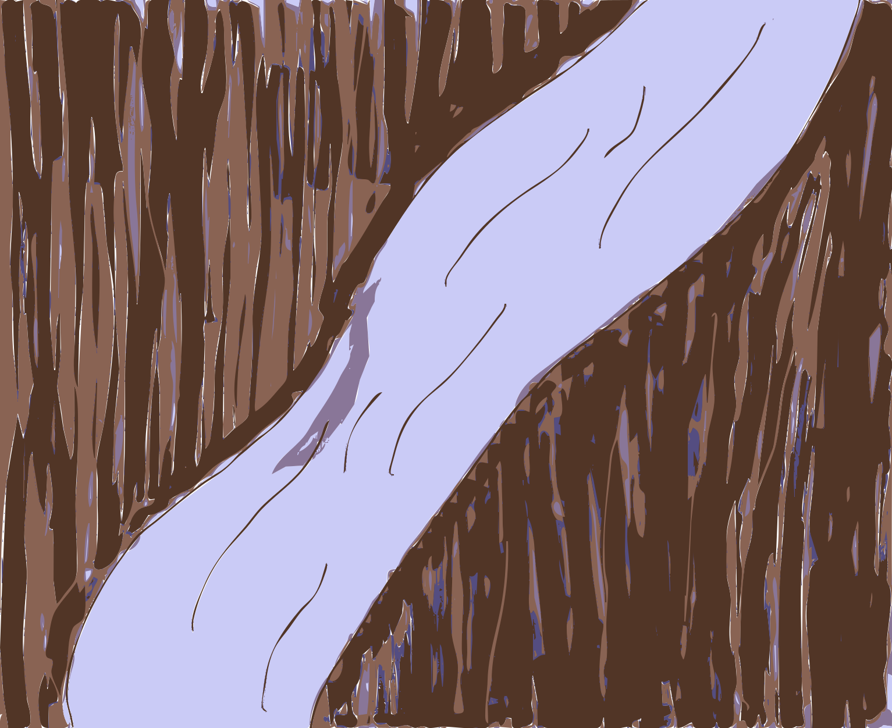
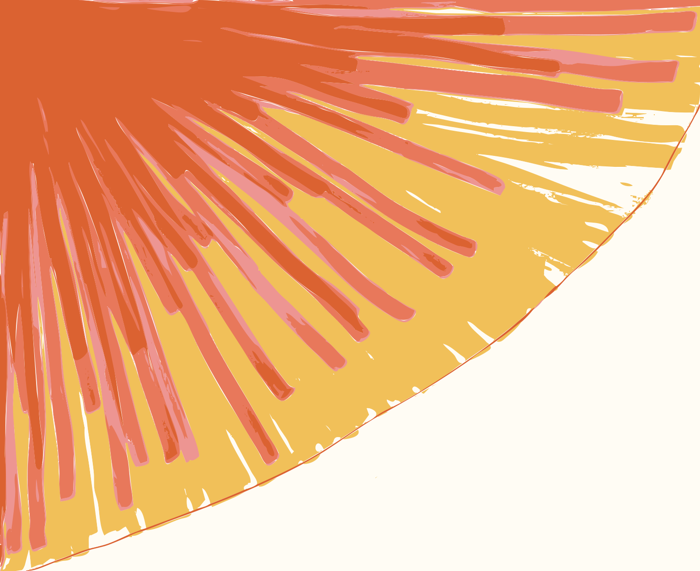
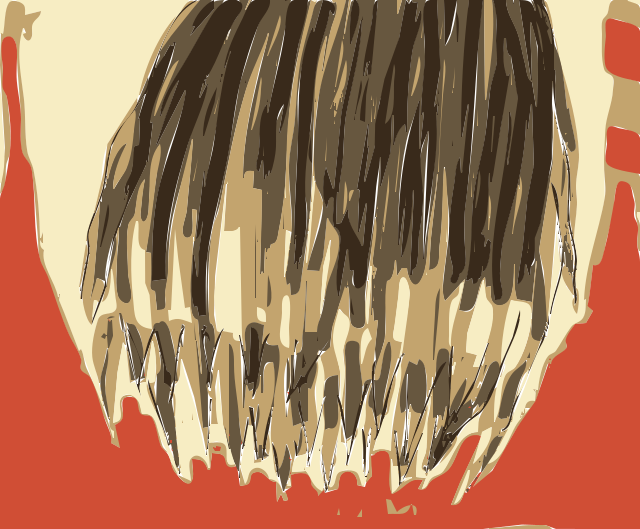
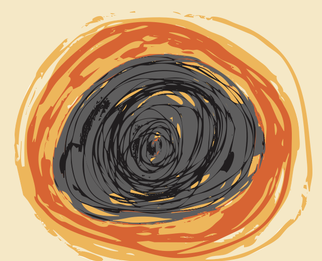

joy carved through skin, like a river cuts through the earth and makes home there

your eyes - with their radiant play of fire

the sun of my childhood. Infused with death, with gorgeous life

the fire that bites at my life. in my stomach, cutting me open always